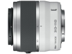

器材库 > APS画幅镜头 > 1 NIKKOR VR 30-110/3.8-5.6

详细规格
镜头类型
远摄变焦镜头
发布日期
2011-09-21
厂家推荐价格
2,100.00 （人民币）
焦距
30mm-110mm
等效35mm画幅焦距
81mm-297mm
最大光圈
f/3.8-5.6
最小光圈
f/16
视角（对角）
29.67° ~8.33°
镜头结构
18片/12组
低/超低色散镜片
2片
光圈叶片
7片
最近对焦距离
100cm
最大放大倍率
0.1
滤镜口径
40.5mm
镜头卡口
Nikon 1
防抖
是
颜色
银色, 黑色, 红色, 粉色, 白色
尺寸
60×61mm
重量
180g
上帝武装2013-08-25 10:594.25 分
操作性 4.00耐用性 4.00性价比 4.50解像力 4.50色彩还原 4.50机械结构 4.00
karaoke2013-03-08 21:203.83 分
操作性 4.50耐用性 3.00性价比 5.00解像力 3.50色彩还原 3.00机械结构 4.00
产品图 / 样片
1 NIKKOR VR 30-110/3.8-5.6
评测 / 相关文章
- Nikon 1相机镜头使用体会 （存档）
- ［资讯］尼康公布Nikon 1系列镜头固件 （存档）
- ［试用］Nikon 1系统两机四头日本九州行 （存档）
- ［资讯］尼康全球发布首款EVIL相机及附件 （存档）
- ［影像］尼康全新1系列相机样片赏析 （存档）